Дискрет тасодифий микдорларнинг сонли тавсифлари ва уларнинг хоссалари
Юкорида кўрганимиздек, таксимот конуни дискрет тасодифий микдорни тўлик тавсифлайди. Бирок кўпинча таксимот конуни номаълум бўлиб, тасодифий микдорни йигма холда тасвирлайдиган сонлар билан чекланишга тўгри келади; бундай сонлар тасодифий микдорнинг сонли тавсифлари деб аталади.
Мухим сонли тавсифлар каторига математик кутилма киради. Математик кутилма такрибан тасодифий микдорнинг ўртача кийматига тенг. Кўпгина масалаларни ечиш учун математик кутилмани билиш етарлидир. Масалан, агар биринчи мерган урган очколарнинг математик кутилмаси иккинчи мерганникидан катта эканлиги маълум бўлса, у холда биринчи мерган ўрта хисобда иккинчи мерганга нисбатан кўпрок очко уради, бинобарин, у иккинчи мергандан яхширок отади.
Х дискрет тасодифий микдорнинг математик кутилмаси деб унинг барча мумкин бўлган кийматлари билан уларнинг эхтимолликлари кўпайтмалари йигиндисига айтилади ва М(Х) оркали белгиланади.
Х тасодифий микдор
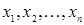 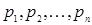
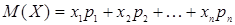
тенглик билан аникланади.
Агар Х дискрет тасодифий микдор чексиз кўп мумкин бўлган кийматларни кабул килса, у холда
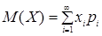
1-мисол. Х тасодифий микдорнинг таксимот конунини билган холда унинг математик кутилмаси топилсин
6.1-жадвал
|
|
3 |
5 |
2 |
|
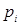 |
0,1 |
0,6 |
0,3 |
Ечиш.
Изланаётган математик
кутилма (6.1) формулага асосан 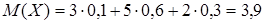
2-мисол. Агар А ходисанинг эхтимоллиги р га тенг бўлса, битта тажрибада А ходисанинг рўй беришлар сонининг математик кутилмаси топилсин.
Ечиш.
Х тасодифий микдор
— А ходисанинг битта
тажрибада рўй беришлар сони — факат
иккита — р эхтимоллик билан 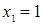 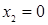 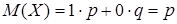
Шундай килиб, ходисанинг битта тажрибада рўй беришлар сонининг математик кутилмаси шу ходиса эхтимоллигига тенг.
Энди математик кутилманинг хоссаларини келтирамиз.
1-хосса. Ўзгармас микдорнинг математик кутилмаси шу ўзгармаснинг ўзига тенг:
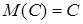
Исбот. С ўзгармасни битта мумкин бўлган С кийматга
эга бўлган ва уни 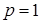
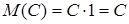
2-хосса. Ўзгармас кўпайтувчини математик кутилма белгисидан ташкарига чикариш мумкин:
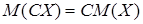
Агар иккита тасодифий микдордан бирининг таксимот конуни иккинчисининг кандай киймат кабул килганлигига боглик бўлмаса, бу тасодифий микдорлар богликмас деб аталади.
Богликмас Х ва Y тасодифий микдорларнинг кўпайтмаси деб шундай ХY тасодифий микдорга айтиладики, унинг мумкин бўлган кийматлари Х нинг мумкин бўлган хар бир кийматини Y нинг мумкин бўлган хар бир кийматига кўпайтирилганига тенг; ХY кўпайтманинг мумкин бўлган кийматларининг эхтимолликлари кўпайтувчиларнинг мумкин бўлган кийматларининг эхтимолликлари кўпайтмасига тенг.
3-хосса. Иккита богликмас тасодифий микдор кўпайтмасининг математик кутилмаси уларнинг математик кутилмалари кўпайтмасига тенг:
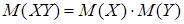
1-натижа. Бир нечта богликмас тасодифий микдорлар кўпайтмасининг математик кутилмаси уларнинг математик кутилмалари кўпайтмасига тенг.
3-мисол. Богликмас Х ва Y тасодифий микдорлар куйидаги таксимот конунлари оркали берилган:
6.2-жадвал
|
|
5 |
2 |
4 |
|
|
0,6 |
0,1 |
0,3 |
ва
6.3-жадвал
|
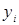 |
7 |
9 |
|
|
0,8 |
0,2 |
ХY тасодифий микдорнинг математик кутилмаси топилсин.
Ечиш. Берилган тасодифий микдорларнинг хар бирининг математик кутилмасини топамиз:
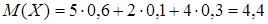
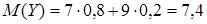
Х ва Y тасодифий микдорлар богликмас, шунинг учун изланаётган математик кутилма куйидагига тенг:
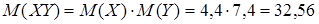
Х ва Y тасодифий микдорларнинг йигиндиси деб шундай Х+Y тасодифий микдорга айтиладики, унинг мумкин бўлган кийматлари Х нинг мумкин бўлган хар бир киймати билан Y нинг мумкин бўлган хар бир киймати йигиндиларига тенг; Х+Y нинг мумкин бўлган кийматларининг эхтимолликлари богликмас Х ва Y тасодифий микдорлар учун кўшилувчиларнинг эхтимолликлари кўпайтмасига тенг; боглик тасодифий микдорлар учун эса кўшилувчилардан бирининг эхтимоллиги билан иккинчисининг шартли эхтимоллиги кўпайтмасига тенг.
4-хосса. Иккита тасодифий микдор йигиндисининг математик кутилмаси кўшилувчиларнинг математик кутилмалари йигиндисига тенг:
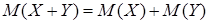
2-натижа. Бир нечта тасодифий микдорлар йигиндисининг математик кутилмаси кўшилувчиларнинг математик кутилмалари йигиндисига тенг.
4-мисол. Иккита шашколтош ташланганда тушиши мумкин бўлган очколар йигиндисининг математик кутилмаси топилсин.
Ечиш. Х оркали биринчи шашколтошда ва Y оркали иккинчи шашколтошда тушиши мумкин бўлган очколар сонини белгилаймиз. Бу микдорларнинг мумкин бўлган кийматлари бир хил бўлиб, 1, 2, 3, 4, 5 ва 6 га тенг, чунончи бу кийматларнинг хар бирининг эхтимоллиги 1/6 га тенг.
Биринчи шашколтошда тушиши мумкин бўлган очколар сонининг математик кутилмасини топамиз:
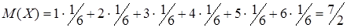
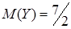
Изланаётган математик кутилма куйидагига тенг:
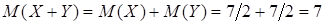
5-хосса. Хар бирида А ходисанинг рўй бериш эхтимоллиги р ўзгармас бўлган n та богликмас тажрибада бу ходисанинг рўй беришлари сонининг математик кутилмаси тажрибалар сонини битта синовда ходисанинг рўй бериш эхтимоллигига кўпайтирилганига тенг:
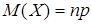
5-мисол. Битта корхона текширилганда хужжат юритишдаги
хатоларни аниклаш эхтимоллиги  га тенг.
Агар 10 марта корхоналар текширилган бўлса, хатоларни аниклашлар жами сонининг математик
кутилмаси топилсин.
га тенг.
Агар 10 марта корхоналар текширилган бўлса, хатоларни аниклашлар жами сонининг математик
кутилмаси топилсин.
Ечиш. Хар бир текширишда хатоларни аниклаш бошка текширишлар натижасига боглик эмас, шунинг учун каралаётган ходисалар богликмасдир, бинобарин, изланаётган математик кутилма куйидагича:
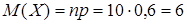
Айрим тасодифий микдорлар бир хил математик кутилмаларга эга бўлсаларда, мумкин бўлган кийматлари хар хил бўлади. Масалан, куйидаги таксимот конунлари билан берилган Х ва Y дискрет тасодифий микдорларни кўриб чикайлик:
6.4-жадвал
|
|
–0,01 |
0,01 |
|
|
0,5 |
0,5 |
ва
6.5-жадвал
|
|
–100 |
100 |
|
|
0,5 |
0,5 |
Бу микдорларнинг математик кутилмаларини топайлик:
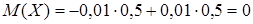
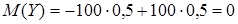
Бу ерда иккала микдорнинг математик кутилмалари бир хил, мумкин бўлган кийматлари эса хар хил, бунда Х нинг мумкин бўлган кийматлари унинг математик кутилмасига якин, Y нинг мумкин бўлган кийматлари эса ўзининг математик кутилмасидан анча узок. Шундай килиб, тасодифий микдорнинг факат математик кутилмасини билган холда унинг кандай кийматлар кабул килиши мумкинлиги хакида хам, бу кийматлар математик кутилма атрофида кандай сочилганлиги хакида хам бирор мулохаза юритиш мумкин эмас.
Бошкача килиб айтганда, математик кутилма тасодифий микдорни тўлик тавсифламайди. Шу сабабли математик кутилма билан бир каторда бошка сонли тавсифлар хам каралади.
Х — тасодифий микдор
ва М(Х) унинг математик кутилмаси бўлсин. Тасодифий микдорнинг четланиши деб 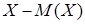
Амалиётда кўпинча тасодифий микдорнинг мумкин бўлган кийматларининг ўртача киймати атрофида таркоклигини бахолаш талаб килинади. Масалан, артиллерияда отилган снарядлар уриб туширилиши лозим бўлган нишон атрофига канчалик якин тушишини билиш мухимдир.
Дискрет тасодифий микдорнинг дисперсияси (таркоклиги) деб тасодифий микдорнинг ўзининг математик кутилмасидан четланиши квадратининг математик кутилмасига айтилади:
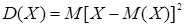
Дисперсияни хисоблаш учун кўпинча куйидаги формуладан фойдаланиш кулай бўлади:
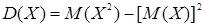
6-мисол. Куйидаги таксимот конуни билан берилган Х тасодифий микдорнинг дисперсияси топилсин:
6.6-жадвал
|
|
2 |
3 |
5 |
|
|
0,1 |
0,6 |
0,3 |
Ечиш. М(Х) математик кутилма куйидагига тенг:
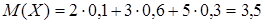
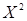
6.7-жадвал
|
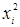 |
4 |
9 |
25 |
|
|
0,1 |
0,6 |
0,3 |
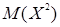
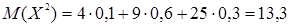
Изланаётган дисперсия
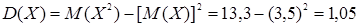
Математик кутилма каби, дисперсия хам бир нечта хоссага эга.
6-хосса. Ўзгармас микдорнинг дисперсияси нолга тенг:
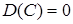
Исбот. Дисперсиянинг таърифига кўра
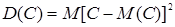
6-хоссадан фойдаланиб, 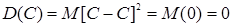
Шундай килиб,
.
Ўзгармас микдор доимо айнан бир хил кийматни саклаши ва демак, таркокликка эга эмаслиги инобатга олинса, бу хосса ойдин бўлиб колади.
7-хосса. Ўзгармас кўпайтувчини квадратга ошириб, дисперсия белгисидан ташкарига чикариш мумкин:
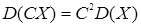
8-хосса. Иккита богликмас тасодифий микдор йигиндисининг дисперсияси бу микдорлар дисперсияларининг йигиндисига тенг:
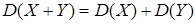
3-натижа. Бир нечта богликмас тасодифий микдорлар йигиндисининг дисперсияси бу микдорлар дисперсияларининг йигиндисига тенг.
4-натижа. Ўзгармас микдор билан тасодифий микдор йигиндисининг дисперсияси тасодифий микдорнинг дисперсиясига тенг:
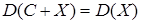
Исбот. С ва Х микдорлар ўзаро богликмас, шунинг учун 8-хоссага асосан
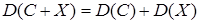
6-хоссага асосан . Демак,
.
Х ва Х + С микдорлар факат санок боши билан фарк килиши ва демак, ўзларининг математик кутилмалари атрофида бир хил таркокликка эга эканлиги инобатга олинса, бу хосса ойдин бўлиб колади.
9-хосса. Иккита богликмас тасодифий микдор айирмасининг дисперсияси бу микдорлар дисперсияларининг йигиндисига тенг:
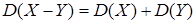
Исбот. 8-хоссага асосан
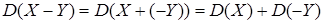
7-хоссага асосан
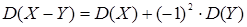
ёки
.
10-хосса. Хар бирида А ходисанинг рўй бериш эхтимоллиги р ўзгармас бўлган n та богликмас тажрибада бу ходисанинг рўй беришлари сонининг дисперсияси тажрибалар сонини битта тажрибада ходисанинг рўй бериш ва рўй бермаслик эхтимолликларига кўпайтирилганига тенг:
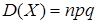
7-мисол. ДСИ томонидан хар бирида хужжат юритишдаги хатоларни
аниклаш эхтимоллиги  га тенг бўлган 10 марта корхоналарнинг текширувлари
ўтказилмокда. Х тасодифий микдор
— бу текширувларда хужжат юритишдаги хатоларни аниклашлар сонининг дисперсияси хисоблансин.
га тенг бўлган 10 марта корхоналарнинг текширувлари
ўтказилмокда. Х тасодифий микдор
— бу текширувларда хужжат юритишдаги хатоларни аниклашлар сонининг дисперсияси хисоблансин.
Ечиш.
Шартга кўра, 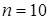 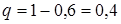 .
Хужжат юритишдаги хатоларни аникламаслик эхтимоллиги
.
Хужжат юритишдаги хатоларни аникламаслик эхтимоллиги
Изланаётган
дисперсия 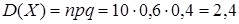
Тасодифий микдорнинг мумкин бўлган кийматларининг унинг ўртача киймати атрофида таркоклигини бахолаш учун ўртача квадратик четланиш хам хизмат килади.
Х тасодифий микдорнинг ўртача квадратик четланиши деб дисперсиядан олинган квадрат илдизга айтилади:
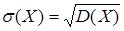
8-мисол. Х тасодифий микдор куйидаги таксимот конуни билан берилган:
6.8-жадвал
|
|
2 |
3 |
10 |
|
|
0,1 |
0,4 |
0,5 |
ўртача квадратик четланиш топилсин.
Ечиш. М(Х) математик кутилма куйидагига тенг:
.
математик кутилма куйидагича:
.
Дисперсияни топамиз:
.
Изланаётган ўртача квадратик четланиш куйидагига тенг:
.
Назорат учун саволлар:
1. Тасодифий микдорнинг сонли тавсифлари деб нимага айтилади ва уларнинг кандай турларини биласиз?
2. Математик кутилма нима ва у кандай аникланади?
3. Ходисанинг битта тажрибада рўй беришлар сонининг математик кутилмаси нимага тенг ва у кандай топилади?
4. Математик кутилманинг 1- ва 2-хоссалари (1- ва 2-хоссалар) хакида нима биласиз?
5. Кандай тасодифий микдорлар богликмас дейилади ва богликмас тасодифий микдорларнинг кўпайтмаси нима бўлади?
6. Тасодифий микдорларнинг йигиндиси кандай аникланади?
7. Математик кутилманинг 3- ва 4-хоссалари хамда уларнинг натижалари (3- ва 4-хоссалар, 1- ва 2-натижалар) хакида нима биласиз?
8. Тасодифий микдорнинг математик кутилмадан ташкари бошка сонли тавсифларини киритишнинг максадга мувофиклиги нимада ва тасодифий микдорнинг четланиши нима?
9. Дисперсия нима ва у кандай топилади?
10. Дисперсиянинг 1- ва 2-хоссалари (6- ва 7-хоссалар) хакида нима биласиз?
11. Дисперсиянинг 3-хоссаси хамда унинг натижалари (8-хосса, 3- ва 4-натижалар) хакида нима биласиз?
12. Дисперсиянинг 4-хоссаси (9-хосса) хакида нима биласиз?
13. n та богликмас тажрибада А ходисанинг рўй беришлар сонининг математик кутилмаси ва дисперсияси нимага тенг (5- ва 10-хоссалар)?
14. Ўртача квадратик четланиш нима ва у кандай аникланади?